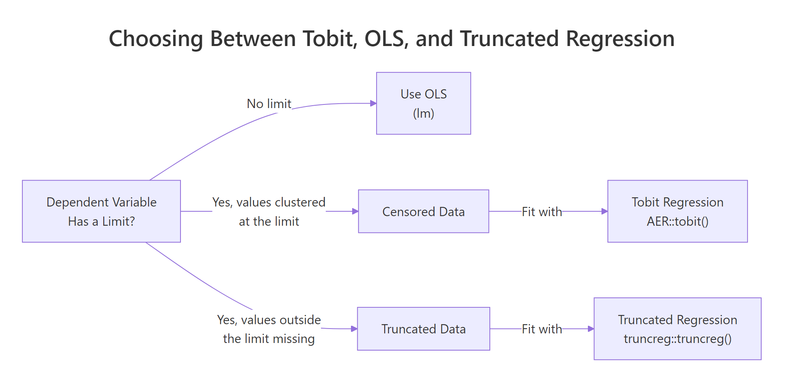
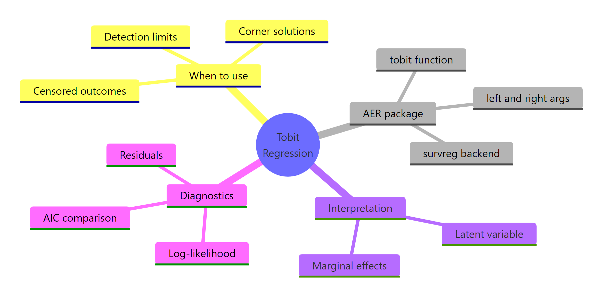

Tobit Regression in R: AER Package for Censored Outcomes
Tobit regression models an outcome that is partially hidden at a floor or ceiling, like spending that cannot go below zero or test scores capped at the top of a scale. The tobit() function in the AER package fits these models in one line by extending classical linear regression to respect the censoring point.
What is Tobit regression and when should you use it?
Many real outcomes cluster at a boundary. The Affairs dataset bundled with AER records how often married people report being unfaithful in the past year, with about three-quarters of respondents reporting zero. Ordinary least squares ignores that floor and produces biased coefficients. Tobit regression fits a latent linear model for the true underlying propensity, then applies the floor during estimation. One call to tobit() gives us the full result.
The Estimate column gives coefficients of the latent model: for every extra year of marriage, the latent propensity for affairs rises by 0.53 units, holding everything else fixed. Log(scale) is the log of the residual standard deviation, and exp(2.17) = 8.78 is the estimated $\sigma$. The log-likelihood and Wald statistic tell us the whole set of predictors is strongly jointly significant.
Try it: Drop religiousness from the model and refit as ex_mod. Does the yearsmarried coefficient change much when you remove a correlated predictor?
Click to reveal solution
Explanation: Dropping a correlated predictor shifts the yearsmarried coefficient because the model now has to absorb part of what religiousness was explaining. The change is small here because the two predictors are only weakly correlated.
Why does OLS fail on censored outcomes?
When the outcome is censored at zero, OLS treats every zero as a genuine low observation. The fitted line is pulled down by all those clustered points, so the estimated slope shrinks toward zero. Tobit acknowledges that any observation at the limit could really be any value at or below it, and adjusts the likelihood to recover the true slope.
OLS estimates the slope at about 1.29, far short of the true value of 2.00. Tobit recovers the true slope almost exactly (1.98). The gap is the attenuation bias that censoring introduces into OLS, and it grows as more observations sit at the limit.

Figure 1: Choose Tobit when the outcome has a known limit and values pile up at it; choose OLS or truncated regression otherwise.
Truncated regression, a close cousin, is for a different problem: data where observations beyond the limit are not just clipped but missing entirely from the sample. Tobit is the right choice when every observation is still in the data, just flattened at the boundary.
Try it: Re-run the same simulation but censor at 2 instead of 0. How much worse does the OLS bias become when roughly half the observations end up at the limit?
Click to reveal solution
Explanation: With censoring at 2, more than half of the latent values are below the floor, so OLS shrinks the slope to about 0.70, a severe bias. Tobit still recovers the true slope of 2.
How do the left and right arguments work in tobit()?
The tobit() function signature is tobit(formula, left = 0, right = Inf, dist = "gaussian", data). The left and right arguments define the censoring window. Any observation at left is treated as left-censored (its true value could be anywhere at or below left), and any observation at right is treated as right-censored. Setting either bound to -Inf or Inf turns off censoring on that side.
All three models use the same formula and data, but their coefficients differ because they disagree about how much information the boundary values carry. The unbounded fit looks very different from the default because it ignores the 451 zeros entirely. The two-sided model sits in between, acknowledging that anyone reporting 4 might well have had more affairs but simply topped out at the category.
left = 0, right = Inf encode the classical Tobit model. Set left = -Inf to drop left-censoring and right = Inf to drop right-censoring. If your data has no censoring at all, use lm() instead, it is faster and has simpler inference.Try it: Fit tobit(affairs ~ age + yearsmarried + rating, left = -Inf, right = 3, data = Affairs) and call the result ex_right3. Is the rating coefficient larger in magnitude than in the default model?
Click to reveal solution
Explanation: Switching off left-censoring makes the zeros count as real low values, which pulls all coefficients toward zero. The rating coefficient shrinks from -2.29 to -0.71 in magnitude.
How do you interpret Tobit coefficients?
A Tobit coefficient $\beta_j$ is the effect of predictor $x_j$ on the latent outcome $y^*$. It tells us how the underlying propensity changes, not the observed value. The latent model is:
$$y^* = X\beta + \varepsilon, \quad \varepsilon \sim N(0, \sigma^2)$$
$$y = \max(y^*, 0)$$
Where:
- $y^*$ is the unobserved latent propensity
- $y$ is the observed (censored) outcome
- $\beta$ are the coefficients returned by
coef(tobit_mod) - $\sigma$ is
exp(Log(scale))from the summary
Because many observed $y$ values are stuck at the floor, the effect on the observed outcome is smaller than $\beta_j$. A standard adjustment scales the latent coefficient by the probability of being above the limit:
$$\frac{\partial E[y \mid x]}{\partial x_j} \approx \beta_j \cdot P(y^* > 0 \mid x)$$
Where $P(y^* > 0 \mid x) = \Phi(X\beta / \sigma)$ using the standard normal CDF $\Phi$.
The latent coefficient says one more year of marriage raises the propensity for affairs by 0.53 units. But only about 25% of respondents are above the censoring floor, so the average effect on the observed count is roughly 0.13 affairs per year of marriage. That second number is what we would report when predicting real-world outcomes; the first is what we would report when describing the underlying model.
Try it: Compute the average marginal effect of age on observed affairs. It should be a small negative number.
Click to reveal solution
Explanation: The latent coefficient for age (-0.178) is multiplied by the average probability of being uncensored (0.251), giving an observed-scale effect of about -0.045 affairs per year of age.
How do you predict and diagnose the fit?
Three tools handle most Tobit diagnostics: predicted values, information criteria, and the likelihood ratio test. The predict() method returns latent predictions by default. Information criteria like AIC compare models that do not need to be nested. The likelihood ratio test, from the lmtest package, compares nested models with a chi-squared p-value.
The likelihood ratio test has a p-value of 0.20, so we cannot reject the simpler model; occupation does not significantly improve the fit given the other predictors. AIC agrees: the smaller model wins by about 0.4 points. That is a rounding-error win, so either model is defensible, but the principle of parsimony pushes us to keep the simpler one.
summary() can be off when the latent coefficient is close to zero because the scale parameter is estimated jointly. lrtest() compares the full likelihoods and is more trustworthy.Try it: Drop rating instead of occupation from the full model and compare AIC against tobit_mod. Is the drop supported?
Click to reveal solution
Explanation: AIC jumps by nearly 30 points when rating is dropped, a very strong signal that marriage rating carries real information about infidelity. Keep it in the model.
Practice Exercises
Exercise 1: Two-sided censoring on Affairs
Fit a Tobit model on the Affairs data with left = 0 and right = 12 using predictors age, yearsmarried, religiousness, and rating. Store the model as px_two_sided. Then compare its rating coefficient against the default left-only model's rating coefficient and save both in a named vector called px_rating_compare.
Click to reveal solution
Explanation: Only a handful of respondents report 12 affairs, so adding right-censoring at 12 barely changes any coefficient. The two-sided rating effect (-2.31) is very close to the left-only version (-2.21).
Exercise 2: Measure OLS bias in a larger simulation
Simulate 500 observations where x ~ N(0, 1) and y_star = 1 + 1.5 * x + rnorm(500, sd = 2), then left-censor at 0 to get y_obs. Fit both OLS and Tobit on the simulated data. Compute the percentage bias of each slope estimate relative to the true slope of 1.5 and store the results in px_bias_ols and px_bias_tobit. Use set.seed(1958) for reproducibility (a nod to Tobin's original paper year).
Click to reveal solution
Explanation: OLS underestimates the slope by about 26%, a substantial bias driven by the 180-ish simulated observations that sit at the censoring floor. Tobit is essentially unbiased (under 1% off).
Complete Example
Let's walk the Affairs data end-to-end: check censoring, fit, interpret, and diagnose. This is the workflow you will run every time you reach for Tobit.
Three-quarters of responses sit at the floor, so Tobit was clearly the right tool. The latent coefficients say marriage rating has the strongest effect on the underlying propensity, with a one-point higher rating associated with 2.3 fewer units of latent propensity. On the observed scale, that translates to roughly 0.59 fewer affairs per rating point. Log-likelihood and AIC give us anchor numbers to compare against any alternative specification.
Summary
Tobit regression extends linear regression to censored outcomes, fit in R with AER::tobit(). Use it when your dependent variable piles up at a known floor or ceiling and you want unbiased slope estimates.

Figure 2: A mental map of Tobit regression with AER: fit, interpret, diagnose.
Key takeaways:
| Topic | Takeaway |
|---|---|
| When to use | Outcome clustered at a known limit (spending, detection thresholds, capped scores) |
| Syntax | tobit(y ~ x, left, right, data) in the AER package |
| Defaults | left = 0, right = Inf (classical left-censored Tobit) |
| OLS vs Tobit | OLS attenuates slopes on censored data; Tobit is unbiased |
| Coefficients | Describe the latent propensity $y^*$, not the observed $y$ |
| Marginal effects | Latent $\beta_j$ times $P(y^* > 0)$ gives the average effect on observed outcome |
| Model comparison | AIC for non-nested, lmtest::lrtest() for nested; both use the full likelihood |
References
- Kleiber, C. & Zeileis, A. Applied Econometrics with R (AER package and book). CRAN page
- AER
tobitfunction reference. R documentation - Tobin, J. "Estimation of Relationships for Limited Dependent Variables." Econometrica, 26(1), 24-36 (1958). JSTOR
- UCLA OARC Statistical Consulting. Tobit Models in R. Tutorial
- Greene, W. Econometric Analysis, 7th ed., Chapter 19 on limited dependent variables. Pearson (2012).
- Wooldridge, J. Econometric Analysis of Cross Section and Panel Data, Chapter 17. MIT Press (2010).
Continue Learning
- Logistic Regression in R: the parent topic, for binary outcomes where Tobit is the wrong tool.
- Linear Regression: the unrestricted model Tobit extends when censoring is absent.
- Poisson Regression in R: an alternative for count outcomes with many zeros but no true upper or lower limit.